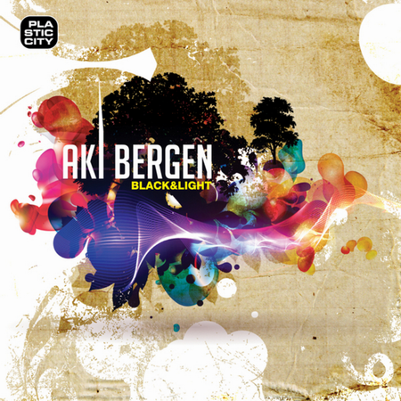

The Inverted Bike Shop
Чуваки собирают твой байк при тебе за 2 часа.
Чуваки собирают твой байк при тебе за 2 часа.
Клевое видео о том, как делают джинсу.

Просто очень хороший альбом.
Ну и они там вообще весь альбом у него в квартире играют!
Еще вот Paradoxical Plane.
Опять буду постить понравившиеся фотки в тумблер. Чуваки вообще клево придумали с этими платными шаблонами, и не клево, что опять гребаный пейпал :(
Клип-то охуенный.


Очень приятный альбом.